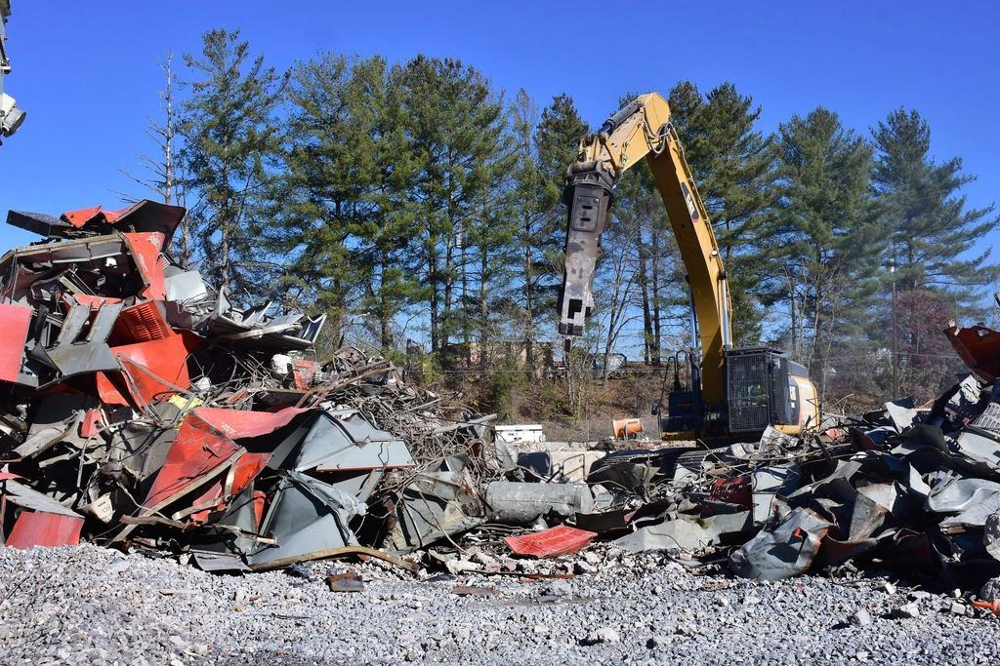

Vi river runt det som ska stå kvar
Invändig rivning i sekelskiftesfastigheter, hotell och butiker på Östermalm, Södermalm och i Gamla stan. Dammfritt, tyst när det behövs och med byggnadsantikvarie i laget.
Vad ska bort – och vad ska sparas?
Styrelser och fastighetsägare om oss

”Vi hade rivning i fyra månader i vår förening och fick inte ett enda klagomål om damm. Partikelvärdena kom varje kväll.”
Eva-Lena T.Östermalm 
”Kryddbodens inredning kom tillbaka i exakt samma skick, varje låda numrerad. Det kändes som ett museum som flyttade.”
Gustaf H.Gamla stan 
”Dyrare än de två andra anbuden. Men stuckaturen i taket var orörd, och det var hela poängen.”
Charlotte B.Vasastan
Illustrationsbilder

Mätt damm, inte uppskattat
På varje arbetsplats mäter vi partikelhalten i trapphuset två gånger om dagen och skickar värdena till fastighetsägaren. Ligger värdet över vår gräns stoppar vi arbetet tills orsaken är hittad.
- 2 ggrpartikelmätning per dag i trapphuset
- 100 %eldrivna nattransporter från hösten 2026
- 64kakelugnar räddade sedan 2012
Fastigheter vi arbetar i
 01
01Hotellet vid Nybrokajen
48 rum rivna ned till stomme medan receptionen och baren höll öppet hela vintern.
Läs mer 02
02Kakelugn nummer 64
En vit rokokougn från 1780-talet i Gamla stan nedplockad i 211 numrerade delar.
Läs mer 03
03Eldrivna transporter
Våra två nya ellastbilar gör alla nattransporter i innerstaden från och med i höst.
Läs mer

 01
01Certifierad sakkunnig kulturvärden
Sofie Adler är certifierad sakkunnig kulturvärden enligt plan- och bygglagen.
 02
02Asbesttillstånd
Arbetsmiljöverkets tillstånd för asbestsanering, med medicinska kontroller för alla sanerare.
 03
03ISO 14001
Certifierat miljöledningssystem med mätbara mål för damm och transporter.
 04
04Ansvarsförsäkring 25 Mkr
Försäkring som täcker skador på fastighet, inredning och magasinerat gods.
Varför är ni dyrare än andra rivningsföretag?
Vi arbetar mer för hand, skyddar mer och mäter mer. I fastigheter med höga kulturvärden brukar det bli billigare totalt, eftersom vi inte orsakar skador som måste åtgärdas efteråt.
Hur gör ni med grannarna?
Vi sätter upp information i trapphuset, anmäler bullriga moment i förväg och har en kontaktperson som grannarna kan ringa direkt.
Kan ni spara stuckatur och golv?
Ja. Stuckaturtak stämpas och skyddas, och parkett täcks med skivor och skyddspapp. Vi har inte skadat ett enda stuckaturtak sedan 1997.
Behövs bygglov för rivning i lägenhet?
Invändig rivning kräver oftast inte bygglov, men bärande väggar och kulturmärkta byggnader kan kräva anmälan eller lov. Sofie hjälper till med underlaget.
Arbetar ni på nätter och helger?
Ja, vårt nattlag arbetar i butiker, hotell och restauranger. I bostadshus arbetar vi bara dagtid.
Var förvaras det som demonteras?
I vårt klimatstyrda lager i Västberga, med försäkring och en numrerad lista över allt som lagras.
Rivet, demonterat och bevarat


- Illustrationsbild
 Ekelund i siffror
Ekelund i siffrorTjugonio år i stenstaden
- 0164Kakelugnar demonterade och återuppsatta
- 02
 0Skadade stuckaturtak sedan 1997
0Skadade stuckaturtak sedan 1997 - 0328Medarbetare
- 041997Grundat av Carl Ekelund
Carl Ekelund startade företaget 1997 efter att ha sett en rivningsentreprenör slå sönder en kakelugn från 1890 på Strandvägen. Sedan 2012 driver han Ekelund tillsammans med byggnadsantikvarien Sofie Adler, och vi är i dag 28 anställda med depå i Västberga.
Alla nyckeltal

Ska ni bygga om i en fastighet med kulturvärden? Boka en besiktning med Carl och Sofie.
Kontakta oss
Så är vi organiserade
- 15 rivare
Rivning för hand
Rivare som arbetar med handverktyg, eldrivna minirobotar och dammsugare med HEPA-filter.

- Sofie Adler och 2 dokumentatörer
Antikvarie & Dokumentation
Inventerar kulturvärden, dokumenterar före och efter och numrerar varje demonterad detalj.

- 6 sanerare
Sanering
Sanerar innan rivningslaget börjar, med eget tillstånd och slutna transporter.

- 4 rivare
Nattlaget
Arbetar i butiker, hotell och restauranger mellan 22 och 06.

Boka en besiktning
Berätta om fastigheten och vad som ska byggas om. Carl eller Sofie återkommer inom en arbetsdag.
